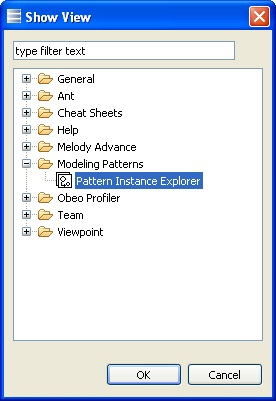

From the show view menu item
Like any view, the Pattern Instance Explorer can also be shown via the “Window - Show View” menu item as illustrated below.
When the “Show View” dialog pops up, look for the category named “Modeling Patterns”.
